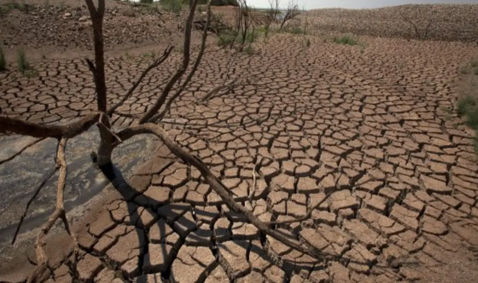
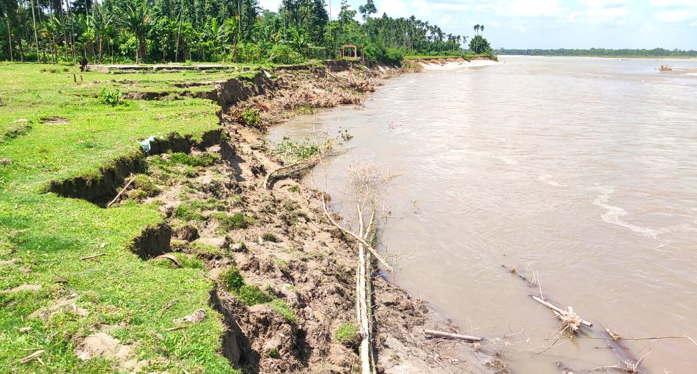

LANDSLIDING
A landslide is the movement of rock, earth, or debris down a sloped section of land.
Landsliding, also known as landslides or mass movements, refers to the downward movement of rock, soil, and debris under the influence of gravity. These movements can range from slow, gradual processes to rapid, catastrophic events, posing significant hazards to human life, infrastructure, and the environment.
Several factors contribute to the occurrence of landslides, including steep slopes, weak or unstable geological formations, heavy rainfall, earthquakes, and human activities such as deforestation and construction. When these factors destabilize the natural equilibrium of slopes, they can trigger landslides, resulting in the sudden displacement of large volumes of material.
Landslides can take various forms, including rockfalls, debris flows, and slumps, each with its own characteristics and triggers. Rockfalls involve the rapid descent of individual rock fragments or boulders down a slope, often triggered by weathering or seismic activity. Debris flows, on the other hand, consist of a mixture of rock, soil, vegetation, and water that flows downhill as a viscous, fast-moving mass. Slumps occur when a segment of a slope collapses along a curved surface, resulting in the downward movement of material.
The impacts of landslides can be devastating, causing loss of life, property damage, disruption of transportation networks, and environmental degradation. Effective landslide management strategies, including land-use planning, slope stabilization measures, early warning systems, and public awareness campaigns, are essential for mitigating the risks associated with landslides and reducing their societal and environmental impacts.

Over Grazing
Overgrazing occurs when plants are exposed to intensive grazing for extended periods of time, or without sufficient recovery periods.
This phenomenon is often driven by factors such as high stocking densities, prolonged grazing periods, and limited access to alternative forage sources.
One of the primary consequences of overgrazing is the depletion of vegetation cover. When livestock consume more plant material than can be naturally replenished, it results in the loss of grasses, herbs, and shrubs from the landscape. This not only reduces the availability of forage for grazing animals but also compromises the integrity of the ecosystem, leading to soil erosion, reduced water infiltration, and loss of habitat for native flora and fauna.
Overgrazing can also have detrimental effects on soil health. As vegetation cover declines, the soil becomes more vulnerable to erosion by wind and water. Without the protection provided by plants, raindrops can dislodge soil particles, leading to the formation of gullies and the loss of fertile topsoil. Moreover, the trampling of soil by livestock hooves can further exacerbate soil compaction and degradation, reducing its ability to support plant growth and retain moisture.
The impacts of overgrazing extend beyond the immediate grazing area, affecting downstream water quality, biodiversity, and ecosystem services. Sediment-laden runoff from eroded pastures can degrade aquatic habitats, impair water quality, and increase the risk of flooding. Furthermore, the loss of vegetation cover can disrupt food webs and alter nutrient cycling processes, leading to cascading effects on ecosystem health and resilience.
To mitigate the impacts of overgrazing, sustainable land management practices must be implemented, including rotational grazing, rest periods for pasture recovery, and the restoration of degraded rangelands. By balancing livestock numbers with available forage resources and implementing targeted grazing strategies, land managers can promote healthy ecosystems, improve soil fertility, and ensure the long-term sustainability of grazing lands. Public education and awareness campaigns are also essential for fostering responsible grazing practices and promoting stewardship of natural resources.

Drought
Drought is a prolonged period of abnormally low precipitation, resulting in water scarcity and significant environmental, social, and economic impacts. It is a natural hazard that occurs when precipitation levels are insufficient to meet the water needs of ecosystems, agriculture, industries, and communities over an extended period.
Droughts can manifest in various forms, including meteorological, hydrological, and agricultural droughts. Meteorological droughts are characterized by below-average precipitation over a specific period, while hydrological droughts involve reduced water availability in rivers, lakes, and aquifers. Agricultural droughts affect soil moisture levels, impairing crop growth and reducing agricultural productivity.
The impacts of drought are wide-ranging and can affect both natural and human systems. In ecosystems, drought can lead to reduced water availability for plants and wildlife, habitat loss, and increased susceptibility to wildfires and disease outbreaks. In agriculture, drought can result in crop failure, livestock losses, and reduced yields, leading to food insecurity, economic hardship, and rural depopulation.
Furthermore, drought can have profound social and economic consequences, particularly in regions dependent on agriculture, water-intensive industries, and tourism. Water shortages can disrupt industrial operations, compromise energy production, and impact public health through water scarcity and sanitation issues. Additionally, drought-induced food shortages can exacerbate poverty, inequality, and social unrest, particularly in vulnerable communities with limited access to resources and services.
Climate change is exacerbating the frequency, intensity, and duration of droughts in many parts of the world, amplifying their impacts on ecosystems and societies. Rising temperatures, altered precipitation patterns, and changes in hydrological cycles are contributing to more frequent and severe drought events, challenging water resource management efforts and adaptation strategies.
To mitigate the impacts of drought, proactive measures are needed to enhance water resource management, promote sustainable land use practices, and improve drought preparedness and response mechanisms. This includes investing in water-efficient technologies, enhancing drought monitoring and early warning systems, implementing drought-resistant crop varieties, and diversifying water sources through conservation, recycling, and desalination. Additionally, fostering community resilience, building adaptive capacity, and promoting international cooperation are essential for addressing the complex challenges posed by drought in a changing climate.
Flood
Floods occur when an overflow of water submerges land that is usually dry.
Floods are natural disasters characterized by the overflow of water onto land that is usually dry. They can occur due to various factors, including heavy rainfall, snowmelt, storm surges, and the failure of dams or levees. Floods can occur slowly over time, such as with prolonged rainfall, or they can happen suddenly, as in the case of flash floods caused by intense rainfall or dam breaches.
The impacts of floods can be extensive and devastating. They can lead to loss of life, displacement of people, destruction of homes and infrastructure, contamination of water supplies, disruption of transportation and communication networks, and damage to crops and livestock. Floods can also trigger secondary hazards such as landslides, mudflows, and the spread of waterborne diseases.
The severity of flooding depends on various factors, including the volume and intensity of precipitation, the topography of the affected area, the condition of drainage systems, and the degree of human alteration to natural watercourses. Urbanization, deforestation, and the paving over of natural surfaces can exacerbate flooding by reducing the land's ability to absorb and retain water.
Flood management strategies aim to reduce the risks associated with flooding and minimize its impacts on communities and the environment. These strategies include the construction of flood defenses such as levees, floodwalls, and stormwater drainage systems; land-use planning to prevent development in flood-prone areas; early warning systems to alert people to imminent flood threats; and community preparedness and response measures.
Climate change is expected to exacerbate flooding in many regions by increasing the frequency and intensity of extreme weather events such as heavy rainfall and storms. Rising sea levels are also contributing to higher storm surges and coastal flooding in vulnerable areas. Adaptation to climate change and sustainable water management practices are essential for reducing the risks associated with flooding and building resilient communities that can withstand and recover from flood events.
